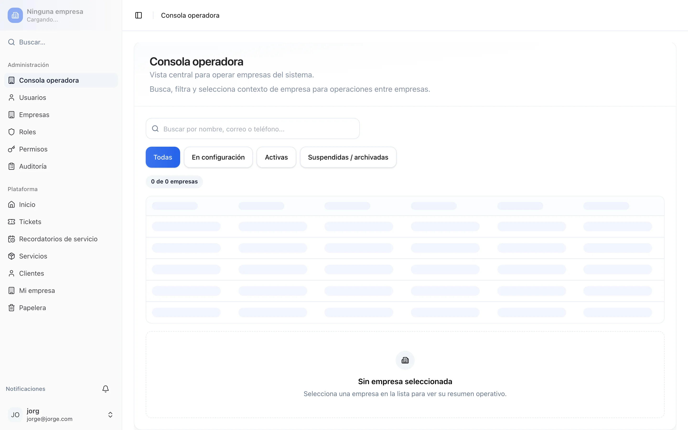
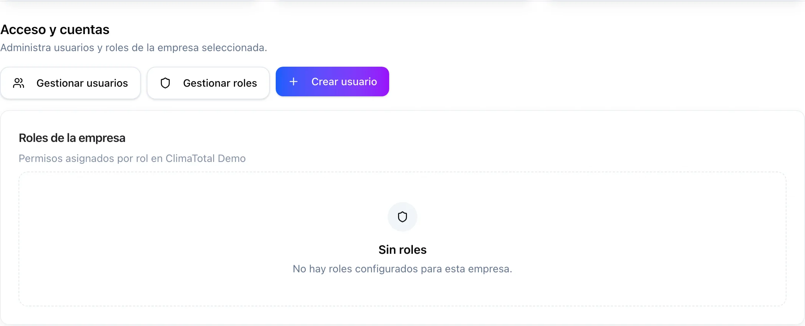
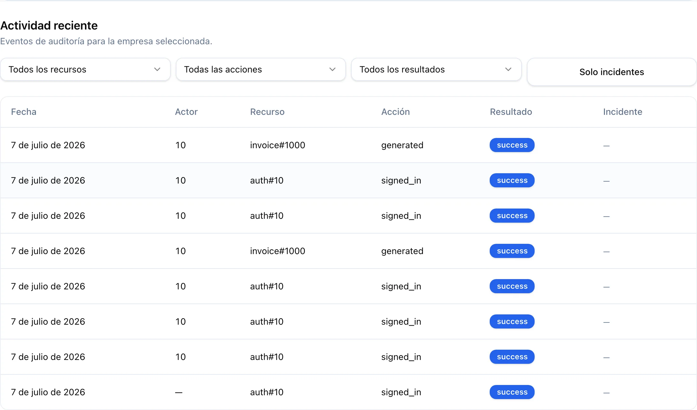
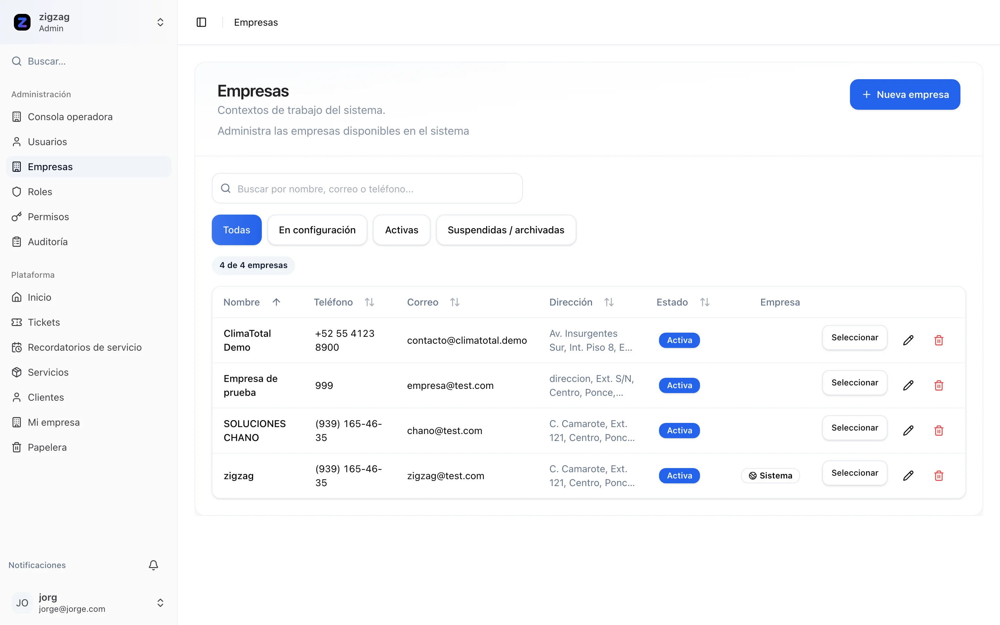
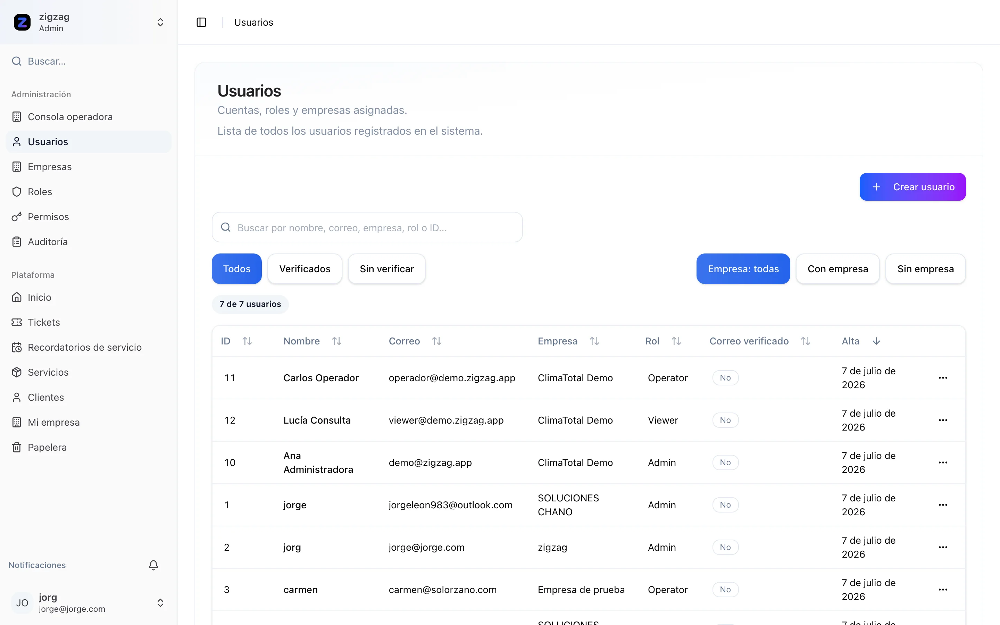
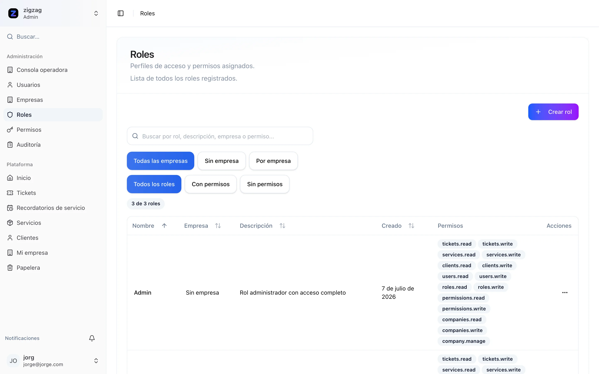
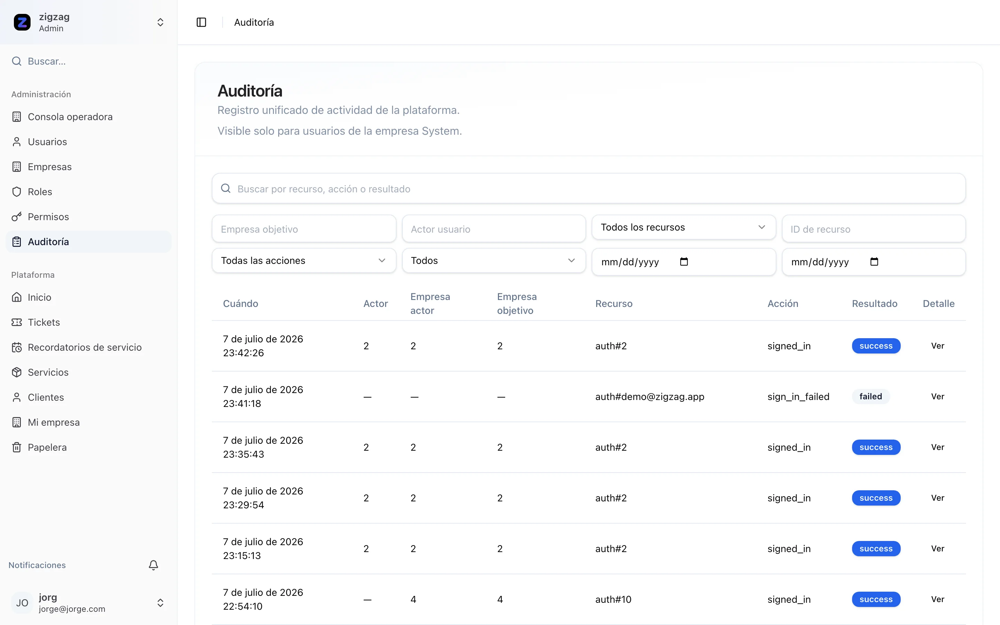
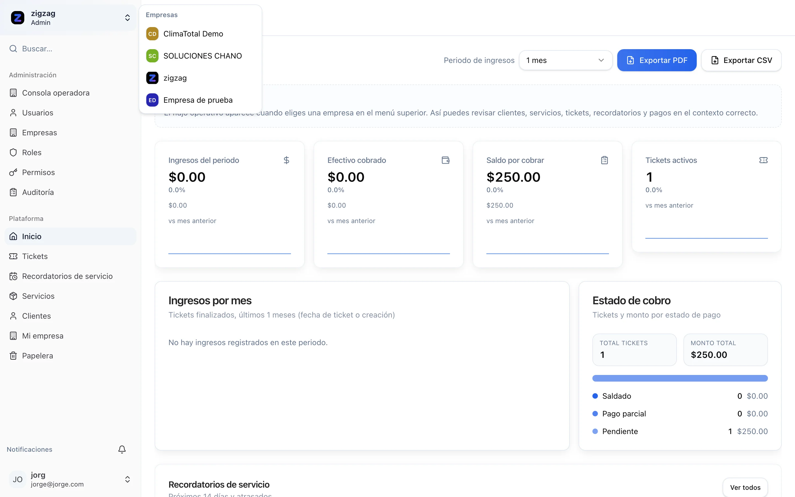
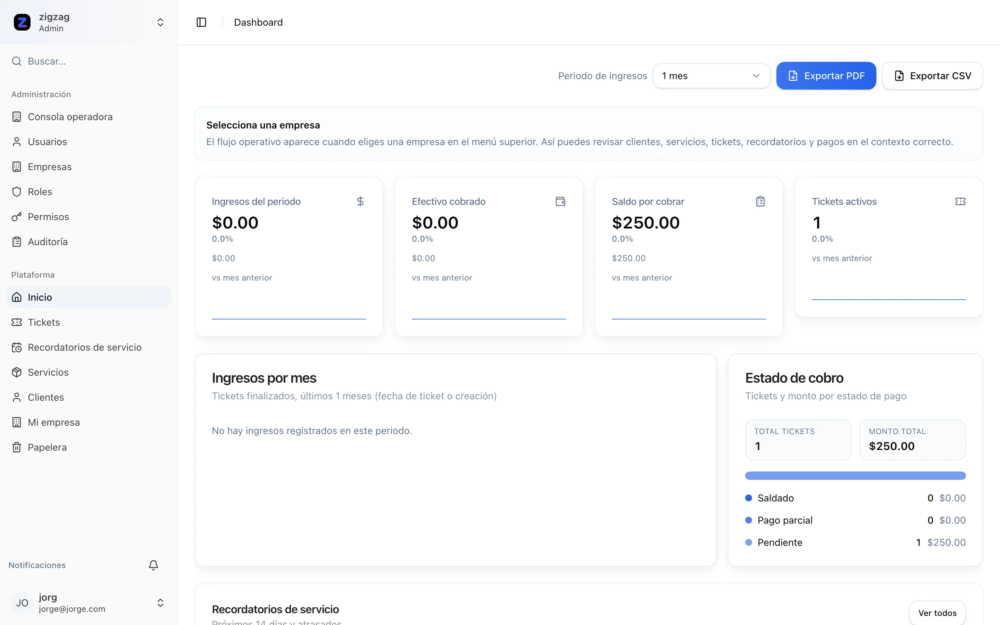

1
Iniciar sesión
Tras autenticarte irás a la Consola operadora, no al dashboard estándar.
 Clic para ampliar
Clic para ampliar
Para administradores de la empresa maestra (plataforma zigzag) que operan y supervisan todas las empresas del ecosistema.
Rol: Super-administrador · Acceso globalLa empresa maestra (zigzag) es el tenant especial del sistema. Sus usuarios pueden administrar todas las empresas, revisar auditoría global y cambiar de contexto para operar cualquier tenant sin salir de la plataforma.
Tras autenticarte irás a la Consola operadora, no al dashboard estándar.
Clic para ampliar
Centro de mando: estado, ciclo de vida, acceso y actividad reciente de empresas.

Clic para ampliar
Clic para ampliar
Clic para ampliarCrea, edita y da de baja tenants. Cada uno aísla tickets, clientes y usuarios.

Clic para ampliarCuentas globales y por tenant con roles Admin, Operator y Viewer.

Clic para ampliarPerfiles de acceso con permisos granulares por módulo (tickets, clientes, auditoría, etc.).

Clic para ampliarExclusivo de la maestra: pagos, cambios de ticket y operaciones administrativas.

Clic para ampliarAbre el menú en la parte superior del sidebar para cambiar entre zigzag y cualquier tenant operativo.

Clic para ampliarSelecciona ClimaTotal Demo para ver el producto con datos reales: 53 tickets, 21 clientes, recordatorios y factura PDF en ticket #1000.

Clic para ampliarComparte la guía para empresas operativas con administradores de cada tenant.